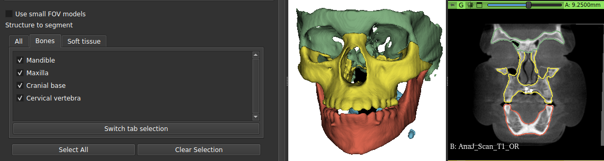

AMASSS — การแบ่งส่วนโครงสร้างจากภาพ CBCT
AMASSS แบ่งส่วน (segmentation) โครงสร้างทางกายวิภาคของภาพ CBCT ศีรษะและใบหน้าโดยอัตโนมัติ ได้แก่ ขากรรไกรล่าง ขากรรไกรบน ฐานกะโหลกศีรษะ ทางเดินหายใจส่วนบน กระดูกสันหลัง ส่วนคอ และผิวหนัง แต่ละโครงสร้างทำนายด้วยโครงข่ายที่ฝึกมาสำหรับโครงสร้างนั้นโดยเฉพาะ ไม่ต้องปรับคอนทราสต์หรือ windowing เอง โมดูลจัดการให้ทั้งหมด
ใช้เมื่อใด
ทุกครั้งที่ต้องการผลการแบ่งส่วนกระดูก ทางเดินหายใจ หรือผิวหนังจากภาพ CBCT — สำหรับผู้ป่วย รายเดียวหรือทั้งชุดในคราวเดียว AMASSS ยังทำงานอยู่เบื้องหลังในเครื่องมืออื่นอีกสองตัว ได้แก่ AREG_CBCT ซึ่งใช้ในการลงทะเบียนภาพ CBCT สองชุดของผู้ป่วยคนเดียวกัน และ VFACE ซึ่งใช้ในการวิเคราะห์ความไม่สมมาตร หากคุณใช้เครื่องมือเหล่านั้น งานส่วนหนึ่งของ AMASSS ก็ถูกทำให้แล้วโดยไม่ต้องเปิดโมดูลนี้
แบ่งส่วนอะไรได้บ้าง
มีหกโครงสร้างที่มีโมเดลที่ฝึกแล้วอยู่ในชุดโมเดลที่เผยแพร่:
- ขากรรไกรล่าง
- ขากรรไกรบน
- ฐานกะโหลกศีรษะ
- ทางเดินหายใจส่วนบน
- กระดูกสันหลังส่วนคอ
- ผิวหนัง
แต่ละโครงสร้างทำนายด้วยโครงข่ายที่รู้จักเพียงโครงสร้างนั้น การแบ่งส่วนขากรรไกรล่างและขากรรไกรบนจึงเป็นการคำนวณแยกกันสองครั้ง ไม่ใช่ โมเดลเดียวหลายโครงสร้าง มีรายการอื่นอีกบางรายการปรากฏในรายการตั้งค่าบางชุด (ฟัน คลองรากฟัน คลองประสาทขากรรไกรล่าง) แต่ไม่มีโมเดลที่ฝึกแล้วในชุดที่เผยแพร่ — เลือกไว้ก็ไม่ได้ผลการแบ่งส่วนใด (รายละเอียดด้านล่าง)

สิ่งที่ต้องใช้ สิ่งที่จะได้
สิ่งที่ต้องเตรียม
- ภาพ CBCT หนึ่งภาพ หรือโฟลเดอร์ที่มีภาพ CBCT หลายภาพ ในรูปแบบ
.nii,.nii.gz,.nrrdหรือ.nrrd.gz - โมเดลที่ฝึกแล้ว ดาวน์โหลดเพียงครั้งเดียว
- โครงสร้างที่ต้องการ โดยเลือกในรายการ
สิ่งที่จะได้
- มาสก์ไบนารีหนึ่งไฟล์ต่อโครงสร้าง หรือแผนที่รวมไฟล์เดียวที่แต่ละโครงสร้าง มีค่าของตนเอง
- หากเลือกไว้ จะได้พื้นผิว 3D (
.vtk) ที่ลงสีตามโครงสร้าง พร้อม แสดงผล - ภาพต้นฉบับของคุณไม่ถูกแก้ไข
ขั้นตอน
- ดาวน์โหลดโมเดล ปุ่ม "Download latest models" จะเปิด หน้า release บน GitHub ในเบราว์เซอร์ ต่างจาก AREG_CBCT หรือ VFACE ตรงที่ AMASSS ไม่ ดาวน์โหลดสิ่งใดเอง — คุณต้องดาวน์โหลดและติดตั้งไฟล์บีบอัดด้วยตนเอง
- ระบุอินพุต ภาพ CBCT ภาพเดียวหรือทั้งโฟลเดอร์ AMASSS หาภาพได้แม้อยู่ในโฟลเดอร์ย่อย
- เลือกโครงสร้างที่ต้องการ จากรายการ
- เลือกรูปแบบเอาต์พุต ผลการแบ่งส่วนแยกกัน รวมกัน หรือ
ทั้งสองแบบ และเลือกการสร้างพื้นผิวด้วยหากต้องการเมช
.vtkที่พร้อม แสดงในฉาก - ระบุโฟลเดอร์เอาต์พุตแล้วรัน ด้วยปุ่ม "Predict" ขั้นนี้ คือช่วงที่ติดตั้ง dependency ที่ยังขาดอยู่ — ไม่ใช่ตอนที่เปิด โมดูล
ใช้เวลานานเท่าใด
AMASSS รันได้โดยไม่มีการ์ดจอ แต่ในทางทฤษฎีมากกว่าทางปฏิบัติ กับภาพชุดหนึ่ง ขั้นการสุ่มตัวอย่างภาพใหม่ (resampling) เพียงขั้นเดียว (ไม่มี GPU) ใช้เวลาราว เจ็ดเท่า ของตัวโครงข่ายเอง เมื่อมี GPU การคำนวณต่อโครงสร้าง ต่อภาพอยู่ในระดับที่ยอมรับได้ หากไม่มี GPU ชุดผู้ป่วยหลายรายจะใช้งานจริงไม่ได้อย่างรวดเร็ว มีข้อดีอย่างหนึ่ง: โมเดลถูกโหลดครั้งเดียวต่อโครงสร้าง ไม่ใช่ครั้งเดียวต่อภาพ — การประมวลผลทั้งโฟลเดอร์ในคราวเดียวจึงใช้เวลามากกว่าการประมวลผลภาพ CBCT ภาพเดียวไม่มากนัก ทีละโครงสร้าง
หากเกิดปัญหา
ช่องที่สลับไปยังรายการ "ความละเอียดสูง" (รวมฟัน คลองรากฟัน และ คลองประสาทขากรรไกรล่าง) เปลี่ยนเพียงช่องเลือกที่แสดงบนหน้าจอ ไม่ได้ลดขอบเขตภาพ (field of view) หรือความละเอียดของการคำนวณ — อย่า คาดหวังว่าจะเร็วขึ้นหรือได้ผลที่ละเอียดขึ้น
"Root canal" (คลองรากฟัน) ถูกเลือกไว้เป็นค่าเริ่มต้นในรายการโครงสร้าง แต่ชุดโมเดล ที่เผยแพร่ไม่มีโมเดลสำหรับโครงสร้างนี้ การเลือกไว้ไม่ทำให้เกิดทั้งข้อผิดพลาดและ ผลการแบ่งส่วน ความล้มเหลวเกิดขึ้นเงียบ ๆ โครงสร้างนี้แค่หายไปจาก ผลลัพธ์
หน้าจอมีตัวเลือก "DICOM Files" เป็นชนิดอินพุต แต่ไม่มีการแปลง DICOM
เกิดขึ้นจริงก่อนการคำนวณ อินพุต DICOM จึงไม่ได้ผลลัพธ์ใด ให้ใช้
ไฟล์ .nii.gz หรือ .nrrd แทน
AMASSS ลบโฟลเดอร์ทำงานชั่วคราวของตนทุกครั้งที่เริ่มทำงานโดยไม่มีเงื่อนไข โฟลเดอร์เดียวกันนี้ใช้ร่วมกับ AREG_CBCT และ VFACE ซึ่งเรียก AMASSS อยู่ เบื้องหลัง หากรันโมดูลเหล่านี้สองตัวพร้อมกันบนเครื่องเดียวกัน ตัวหนึ่ง อาจลบโฟลเดอร์ทำงานของอีกตัวระหว่างรัน — ให้การคำนวณหนึ่งเสร็จก่อน เริ่มอีกการคำนวณ
ขั้นต่อไป
ไม่มีการทำความสะอาดอัตโนมัติกับผลการแบ่งส่วนที่ได้ — ไม่มีการเติมรู
ไม่มีการเก็บเฉพาะส่วนเชื่อมต่อที่ใหญ่ที่สุด สิ่งที่ได้คือเอาต์พุตดิบของโครงข่าย
ควรตรวจสอบก่อนนำไปวัดหรือลงทะเบียนภาพ สำหรับอินพุตไฟล์เดียว
ที่เลือกการสร้างพื้นผิวไว้ เมช .vtk จะถูก
โหลดเข้าฉากโดยตรงเมื่อการคำนวณเสร็จ
อ่านเพิ่มเติม
บทความด้านล่างอธิบายโมดูลรุ่น UNETR สิ่งที่ทำงานอยู่ในปัจจุบันคือการเปลี่ยนไปใช้ nnU-Net ซึ่งไม่มีใครตีพิมพ์ การอ้างอิงบทความนี้เพื่ออธิบาย AMASSS ที่ทำงานอยู่จึงเท่ากับอธิบายสถาปัตยกรรมที่ไม่มีอยู่แล้ว
เกี่ยวกับ AMASSS โดยตรง
- Gillot et al., PLOS ONE 2022 — Automatic multi-anatomical skull structure segmentation of cone-beam computed tomography scans using 3D UNETR. โครงสร้างที่แบ่งส่วน ข้อมูลที่ใช้ฝึก และความแม่นยำที่วัดได้ เข้าถึงได้โดยเสรี
เกี่ยวกับวิธีการ
- Isensee et al., Nature Methods 2021 — nnU-Net: a self-configuring method for deep learning-based biomedical image segmentation. รากฐานของรุ่นปัจจุบัน: วิธีที่เลือกสถาปัตยกรรมและการตั้งค่าของตัวเองจากชุดข้อมูล
- Hatamizadeh et al., WACV 2022 — UNETR: Transformers for 3D Medical Image Segmentation. สถาปัตยกรรมในบทความ PLOS ONE ซึ่งก็คือของโมดูลรุ่นดั้งเดิม
บรรณานุกรมทั้งหมดของเครื่องมือนี้ — ทั้งสิ่งที่พบ และสิ่งที่ค้นแล้วไม่พบ — อยู่ในหน้าแหล่งอ้างอิง
ทำงานอย่างไรจริง ๆ → หน้าแอตลาส: การย้ายไปใช้ nnU-Net v2 โมเดลที่ใช้งาน การรวม label การสร้างพื้นผิว และข้อบกพร่องที่พบในโค้ด